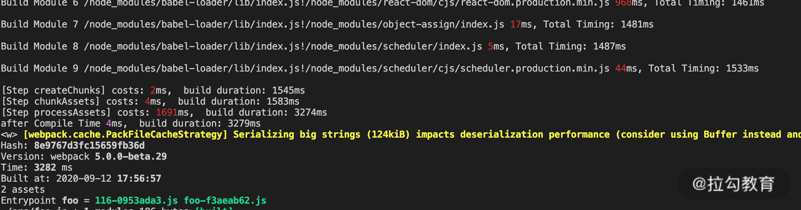
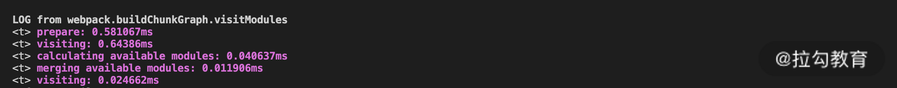

- 00 开篇词 建立上帝视角，全面系统掌握前端效率工程化.md.html
- 01 项目基石：前端脚手架工具探秘.md.html
- 02 界面调试：热更新技术如何开着飞机修引擎？.md.html
- 03 构建提速：如何正确使用 SourceMap？.md.html
- 04 接口调试：Mock 工具如何快速进行接口调试？.md.html
- 05 编码效率：如何提高编写代码的效率？.md.html
- 06 团队工具：如何利用云开发提升团队开发效率？.md.html
- 07 低代码工具：如何用更少的代码实现更灵活的需求.md.html
- 08 无代码工具：如何做到不写代码就能高效交付？.md.html
- 09 构建总览：前端构建工具的演进.md.html
- 10 流程分解：Webpack 的完整构建流程.md.html
- 11 编译提效：如何为 Webpack 编译阶段提速？.md.html
- 12 打包提效：如何为 Webpack 打包阶段提速？.md.html
- 13 缓存优化：那些基于缓存的优化方案.md.html
- 14 增量构建：Webpack 中的增量构建.md.html
- 15 版本特性：Webpack 5 中的优化细节.md.html
- 16 无包构建：盘点那些 No-bundle 的构建方案.md.html
- 17 部署初探：为什么一般不在开发环境下部署代码？.md.html
- 18 工具盘点：掌握那些流行的代码部署工具.md.html
- 19 安装提效：部署流程中的依赖安装效率优化.md.html
- 20 流程优化：部署流程中的构建流程策略优化.md.html
- 21 容器方案：从构建到部署，容器化方案的优势有哪些？.md.html
- 22 案例分析：搭建基本的前端高效部署系统.md.html
- 23 结束语 前端效率工程化的未来展望.md.html
- 捐赠
15 版本特性：Webpack 5 中的优化细节
开始课程前，我们先来解答上一节课的思考题：为什么在开启增量构建后，有时候 rebuild 还是会很慢呢？我们可以从两方面来找原因。首先，Webpack 4 中的增量构建只运用到了新增模块与生成 Chunk 产物阶段，其他处理过程（如代码压缩）仍需要通过其他方式进行优化，例如分包和压缩插件的缓存。其次，过程中的一些处理会额外增加构建时间，例如生成 Source Map 等。因此还是需要通过统计各阶段的执行时间来具体问题具体分析。
然后开始这节课的学习。在上节课里，我们讨论了 Webpack 4 中增量构建的原理，也分析了为什么在生产环境下难以使用增量构建，其中最主要的一点是 Webpack 4 中没有基于文件系统的持久化缓存。这个问题在 Webpack 5 中得到了解决，这节课我们就来看看 Webpack 5 有哪些新的功能特性。
Webpack 5 中的效率优化点
Webpack 5 中的变化有很多，完整的功能变更清单参见官方文档，这里我们介绍其中与构建效率相关的几个主要功能点：
- Persistent Caching
- Tree Shaking
- Logs
Persistent Caching
首先我们通过示例来看下 Webpack 5 中缓存方面的变化。
持久化缓存的示例
如下面的代码和图片所示：
./webpack.cache.config.js
...
module.exports = {
...
cache: {
type: 'filesystem',
cacheLocation: path.resolve(__dirname, '.appcache'),
buildDependencies: {
config: [__filename],
},
},
...
}



可以看到，初次构建完整花费了 3282ms，而在不修改代码进行再次构建的情况下，只花费了不到原先时间的 1/10。在修改代码文件的新情况下也只花费了 628ms，多花费的时间体现在构建被修改的文件的编译上，这就实现了上一课时所寻求的生产环境下的增量构建。
Cache 基本配置
在 Webpack 4 中，cache 只是单个属性的配置，所对应的赋值为 true 或 false，用来代表是否启用缓存，或者赋值为对象来表示在构建中使用的缓存对象。而在 Webpack 5 中，cache 配置除了原本的 true 和 false 外，还增加了许多子配置项，例如：
- cache.type：缓存类型。值为 ‘memory’或‘filesystem’，分别代表基于内存的临时缓存，以及基于文件系统的持久化缓存。在选择 filesystem 的情况下，下面介绍的其他属性生效。
- cache.cacheDirectory：缓存目录。默认目录为 node_modules/.cache/webpack。
- cache.name：缓存名称。同时也是 cacheDirectory 中的子目录命名，默认值为 Webpack 的 \({config.name}-\){config.mode}。
- cache.cacheLocation：缓存真正的存放地址。默认使用的是上述两个属性的组合：path.resolve(cache.cacheDirectory, cache.name)。该属性在赋值情况下将忽略上面的 cacheDirectory 和 name 属性。
单个模块的缓存失效
Webpack 5 会跟踪每个模块的依赖项：fileDependencies、contextDependencies、missingDependencies。当模块本身或其依赖项发生变更时，Webpack 能找到所有受影响的模块，并重新进行构建处理。
这里需要注意的是，对于 node_modules 中的第三方依赖包中的模块，出于性能考虑，Webpack 不会跟踪具体模块文件的内容和修改时间，而是依据依赖包里package.json 的 name 和 version 字段来判断模块是否发生变更。因此，单纯修改 node_modules 中的模块内容，在构建时不会触发缓存的失效。
全局的缓存失效
当模块代码没有发生变化，但是构建处理过程本身发生变化时（例如升级了 Webpack 版本、修改了配置文件、改变了环境变量等），也可能对构建后的产物代码产生影响。因此在这种情况下不能复用之前缓存的数据，而需要让全局缓存失效，重新构建并生成新的缓存。在 Webpack 5 中共提供了 3 种不同维度的全局缓存失效配置。
buildDependencies
第一种配置是cache.buildDependencies，用于指定可能对构建过程产生影响的依赖项。
它的默认选项是{defaultWebpack: [“webpack/lib”]}。这一选项的含义是，当 node_modules 中的 Webpack 或 Webpack 的依赖项（例如 watchpack 等）发生变化时，当前的构建缓存即失效。
上述选项是默认内置的，无须写在项目配置文件中。配置文件中的 buildDenpendencies 还支持增加另一种选项 {config: [__filename]}，它的作用是当配置文件内容或配置文件依赖的模块文件发生变化时，当前的构建缓存即失效。
version
第二种配置是 cache.version。当配置文件和代码都没有发生变化，但是构建的外部依赖（如环境变量）发生变化时，预期的构建产物代码也可能不同。这时就可以使用 version 配置来防止在外部依赖不同的情况下混用了相同的缓存。例如，可以传入 cache: {version: process.env.NODE_ENV}，达到当不同环境切换时彼此不共用缓存的效果。
name
缓存的名称除了作为默认的缓存目录下的子目录名称外，也起到区分缓存数据的作用。例如，可以传入 cache: {name: process.env.NODE_ENV}。这里有两点需要补充说明：
- name 的特殊性：与 version 或 buildDependencies 等配置不同，name 在默认情况下是作为缓存的子目录名称存在的，因此可以利用 name保留多套缓存。在 name 切换时，若已存在同名称的缓存，则可以复用之前的缓存。与之相比，当其他全局配置发生变化时，会直接将之前的缓存失效，即使切换回之前已缓存过的设置，也会当作无缓存处理。
- 当 cacheLocation 配置存在时，将忽略 name 的缓存目录功能，上述多套缓存复用的功能也将失效。
其他
除了上述介绍的配置项外，cache 还支持其他属性：managedPath、hashAlgorithm、store、idleTimeout 等，具体功能可以通过官方文档进行查询。
此外，在 Webpack 4 中，部分插件是默认启用缓存功能的（例如压缩代码的 Terser 插件等），项目在生产环境下构建时，可能无意识地享受缓存带来的效率提升，但是在 Webpack 5 中则不行。无论是否设置 cache 配置，Webpack 5 都将忽略各插件的缓存设置（例如 TerserWebpackPlugin），而由引擎自身提供构建各环节的缓存读写逻辑。因此，项目在迁移到 Webpack 5 时都需要通过上面介绍的 cache 属性来单独配置缓存。
Tree Shaking
Webpack 5 中的另一项优化体现在 Tree Shaking 功能方面。在之前课程中介绍过，Webpack 4 中的 Tree Shaking 功能在使用上存在限制：只支持 ES6 类型的模块代码分析，且需要相应的依赖包或需要函数声明为无副作用等。这使得在实际项目构建过程中 Tree Shaking 的优化效果往往不尽如人意。而这一问题在 Webpack 5 中得到了不少改善。
Nested Tree Shaking
Webpack 5 增加了对嵌套模块的导出跟踪功能，能够找到那些嵌套在最内层而未被使用的模块属性。例如下面的示例代码，在构建后的结果代码中只包含了引用的内部模块的一个属性，而忽略了不被引用的内部模块和中间模块的其他属性：
//./src/inner-module.js
export const a = 'inner_a'
export const b = 'inner_b'
//.src/nested-module.js
import * as inner from './inner-module'
const nested = 'nested'
export { inner, nested }
//./src/example-tree-nested.js
import * as nested from './nested-module'
console.log(nested.inner.a)
//./dist/tree-nest.js
(()=>{"use strict";console.log("inner_a")})();
Inner Module Tree Shaking
除了上面对嵌套引用模块的依赖分析优化外，Webpack 5 中还增加了分析模块中导出项与导入项的依赖关系的功能。通过 optimization.innerGraph（生产环境下默认开启）选项，Webpack 5 可以分析特定类型导出项中对导入项的依赖关系，从而找到更多未被使用的导入模块并加以移除。例如下面的示例代码：
//./src/inner-module.js
export const a = 'inner_a'
export const b = 'inner_b'
export const c = 'inner_c'
//./src/example-tree-nested.js 同上面示例
//.src/nested-module.js
...
const useB = function () {
return inner.b
}
export const usingB = function () {
return useB()
}
//./dist/tree-nest.js (默认optimization.innerGraph = true)
... const t="inner_a",n="inner_b"} ...
//./dist/tree-nest.js (optimization.innerGraph = false)
... const t="inner_a"} ...
在 nested-module.js 中新增了导出项 usingB，该导出项间接依赖导入项 inner.b，而这一导出项在入口模块中并未使用。在默认情况下，构建完成后只保留真正被使用的 inner.a。但是如果将优化项 innerGraph 关闭（且需要同时设置 concatenateModules:false），构建后会发现间接引用的导出项没有被移除，该导出项间接引用的 inner.b 也被保留到了产物代码中。
CommonJS Tree Shaking
Webpack 5 中增加了对一些 CommonJS 风格模块代码的静态分析功功能：
- 支持 exports.xxx、this.exports.xxx、module.exports.xxx 语法的导出分析。
- 支持 object.defineProperty(exports, “xxxx”, …) 语法的导出分析。
- 支持 require(‘xxxx’).xxx 语法的导入分析。
例如下面的代码：
//./src/commonjs-module.js
exports.a = 11
this.exports.b = 22
module.exports.c = 33
console.log('module')
//./src/example-tree-commonjs.js
const a = require('./commonjs-module').a
console.log(a)
//./dist/tree-commonjs.js
()=>{var o={263:function(o,r){r.a=11,console.log("module")}}...
可以看到产物代码中只有被引入的属性 a 和 console 语句，而其他两个导出属性 b 和 c 已经在产物中被排除了。
Logs
第三个要提到的 Webpack 5 的效率优化点是，它增加了许多内部处理过程的日志，可以通过 stats.logging 来访问。下面两张图是使用相同配置*stats: {logging: “verbose”}*的情况下，Webpack 4 和 Webpack 5 构建输出的日志：


可以看到，Webpack 5 构建输出的日志要丰富完整得多。通过这些日志能够很好地反映构建各阶段的处理过程、耗费时间，以及缓存使用的情况。在大多数情况下，它已经能够代替之前人工编写的统计插件功能了。
其他功能优化项
除了上面介绍的和构建效率相关的几项变化外，Webpack 5 中还有许多大大小小的功能变化，例如新增了改变微前端构建运行流程的 Module Federation 和对产物代码进行优化处理的 Runtime Modules，优化了处理模块的工作队列，在生命周期 Hooks 中增加了 stage 选项等。感兴趣的话，你可以通过文章顶部的文档链接或官方网站来进一步了解。
总结
在本节课上线后不久，Webpack 5 的稳定版本将对外发布（2020 年 10 月 10 日）。希望这节课能让你对它有一个初步的印象。
本节课我们主要了解了 Webpack 最新版本与构建效率相关的几个优化功能点，其中最重要的就是 Webpack 5 中引入的持久化缓存的特性。在这个部分我们讨论了如何开启和定制持久化缓存，以及通过哪些方式可以让缓存主动失效，以确保在项目里可以安全地享受缓存带来的效率提升。此外，Webpack 5 中对于 Tree Shaking 的优化也能帮助我们更好地优化项目依赖，减小构建产物的体积。
本节课的课后思考题是：结合今天所讲的持久化缓存和日志统计，分析一下 Webpack 5 中都有哪些阶段使用到了缓存？
Webpack 构建效率优化的系列至此就告一段落了，下节课我们来介绍构建效率篇的最后一个主题：无包构建。
© 2019 - 2023 Liangliang Lee. Powered by gin and hexo-theme-book.